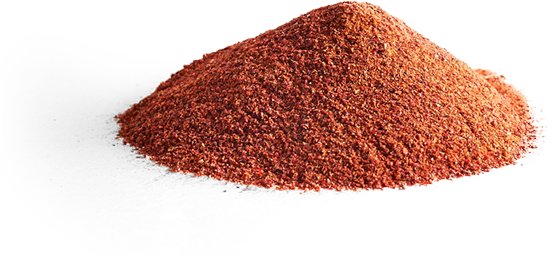
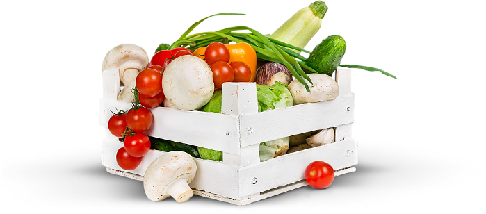

Саме завдяки новим NST- технологіям SUN FOODS ™ може похвалитися широким асортиментом продукції унікальної якості з поліпшеними характеристиками інтенсивності аромату, кольору і смаку своєї продукції.
SUN FOODS ™ завжди прагне принести до столу споживача продукти найвищого ґатунку . Саме з цієї причини, усі овочі і пряно-ароматичні трави вирощуються в Україні, що робить можливим контролювати процеси вирощування і проводити ретельний відбір якісної сировини. Уся сировинна база - поля овочів і плантації ароматичних трав (базилік, кріп, петрушка, орегано, розмарин, чабер) розміщені у безпосередній близькості від сучасного виробничого комплексу у Н. Каховці.
Тільки завдяки своєрідному мікроклімату екологічно чистого Херсонської Таврії , традиціям і спадщині предків, які передаються від батьків до дітей, продукти завжди, на протязі поколінь, мають свій характерний смак і аромат, та роблять ці коштовності природи традиційною городницею України. Тепер Ви набагато ближче до таємниці та чарівництва Херсонщини і можете це спробувати.
В производстве мы используем современные NST-технологии (NewSolarTechnologies) и получаем качественно новый вид сушеных моно-продуктов наивысшего качества с сохранённым натуральным цветом, запахом, вкусом и биоэнергетикой свежего продукта, у которых максимально сохранены полезные вещества: витамины, минералы, антиоксиданты, которые в организме не вырабатываются и поступают только с пищей.
NST-Технологии, как вид эко консервации (обезвоженные продукты), это использование NST-4 инфракрасной сушки с NST способом щадящей деликатной сушки при невысоких t = 50 … 55°С для производства натуральных сушеных продуктов сушеные овощи, сушеная зелень, сушеные грибы, фрукты, ягоды, мясо, в т.ч. пищевых порошков с максимальным сохранением биологически-активных веществ, микро и макроэлементов, органических кислот, хлорофилла, клетчатки и др. полезных веществ.
Этап низко-температурной сушки (50-55°C)

Технологический процесс сушки по NST-Технологии основан на применении инфракрасных лучей определённой длины волны которые активно поглощаются молекулами воды которая содержится в продуктах растительных или животного происхождения, и легко выводят её на поверхность. В тоже время эти лучи не взаимодействуют с тканями и не разрушает клетки продукта который подвергается сушке. Поэтому процесс удаления клеточной и внеклеточной влаги возможен при относительно невысоких температурах, что дает повод говорить о получении с помощью применяемой NST-технологии качественно нового вида продуктов с сохранением всех природних свойств свежего продукта.
Продукт относится к категории 100% натуральные эко продукты, без усилителей вкуса, без ароматизаторов, без консервантов, без красителей, класса - “Премиум”
В отличии от свежих продуктов, которые даже в сверх комфортных условиях хранения, уже к средине зимы теряют больше половины своих полезных свойств, наши сушеные натуральные продукты на протяжении длительного срока хранения не утрачивают своего изначального качества.

Продукция произведена из культивированных грибов шампиньонов, качественных свежих овощей и зелени выращенных в открытом грунте экологически чистой области Украины, Херсонской области, традиционной огороднице Украины и переработана структурным подразделением Компании “СИНТЕКС” - на Новокаховском консервно-сушильном заводе.
Чтобы восстановить все физические, химические и органолептические свойства продукта, сушеный продукт достаточно замочить в тёплой воде на 10-15 минут. При приготовлении первых блюд, соусов, ароматических масел – применять без предварительного замачивания. При приготовлении вторых блюд, выпечки, салатов - с предварительным замачиванием. Восстановление: овощи, зелень, фрукты, ягоды - в 5-6 раз, грибы - в 7-8 раз.
В перерасчёте через восстановление, особенно в зимний период, цена сушеной продукции заметно выигрывает в сравнении с свежей из парников, и явно качественнее и более полезная для здорового питания и пополнения необходимых витаминных запасов в сравнении с продукцией на гидропонике
Науково-технічне співробітництво
Компанія займається стандартизацією та впровадженням технологій екобезпечної та органічної продукції, вдосконалює процеси виробництва розробляє асортимент з використанням нових видів сировини, спільно з Національним університетом біоресурсів і природокористування (НУБіП ) України «Науково-дослідний та проектний інститут стандартизації і технологій екобезпечної та органічної продукції»
Стерилизация и сроки хранения
Инфракрасное излучение при применении NST-технологий и стерилизации СВЧ способствует уничтожению микрофлоры на поверхности продукта, делая сушеные продукты практически стерильным, что позволяет создать условия для гарантированных длительных сроков хранения готовой продукции до 36 месяцев от даты производства, без создания специальных условий
Оборудование контроля
- на производстве внедрена система контроля готовой продукции на наличие металлических примесей, вся сыпучая продукция непосредственно перед упаковыванием пропускается через специальное оборудование - магнитный сепаратор;
- контроль влажности готового продукта ведется на производстве с помощью инфракрасного анализатора влажности фирмы “Radwag” одного из мировых лидеров производства лабораторного оборудывания.
Сертификация
- у предприятия имеется вся разрешительная документация для производства продуктов питания;
- предприятие сертифицировано по системе ISO 9001 : 2009;
- предприятие готовится к переходу на сертификацию по системе ISO 9001 : 2015.